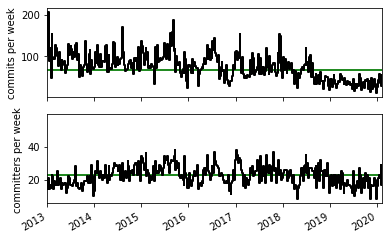
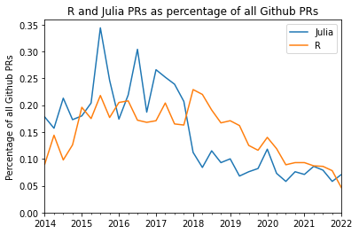
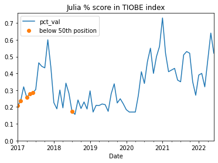
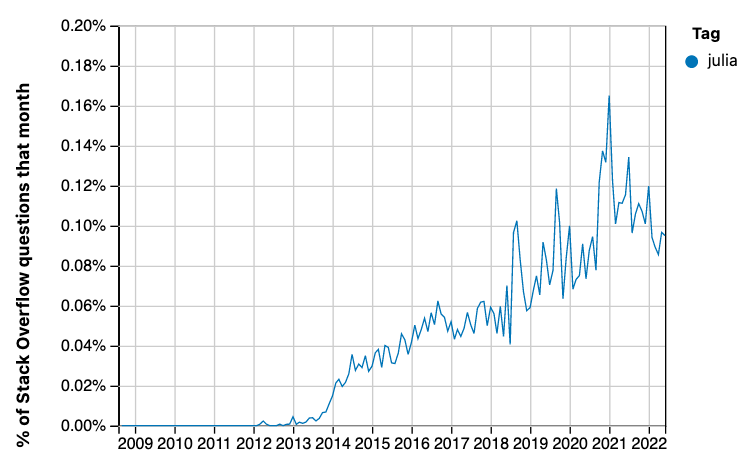
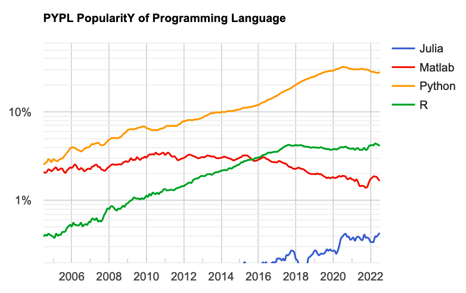

The Julia language has stalled
teaching
open source
programming
Julia isn’t growing fast enough to compete with Python
Keywords
Julia
It’s time to call it — I don’t think the Julia programming language is going to make it into the data analysis mainstream.
You’ll see more data on this below. In summary, there is now some evidence, particularly from Stack Overflow trends, and the Popularity of Programming Languages site, that Julia uptake has plateaued.
Some people hoped that Julia would be the One Language to Rule Them All, at least in science. In order to get there, it needed to have a plausible shot at competing with Python, and to do that, it would need to grow quickly.
I think the data here says it isn’t growing quickly. I think Julia is not going to be able to compete with Python, and that it will remain a niche language that is highly specialized in numerical processing. And, if I had to guess, I would guess that it will start to decline slowly, as it becomes clearer that it is not the language of the future that some had hoped.
I can’t sensibly comment on why Julia has not grown more quickly, but here are some reasoned critiques:
- Why I no longer recommend Julia by Yuri Vishnevsky.
- What’s bad about Julia? by Jakob Nybo Nissen.
- My experiences with Julia by Volker Weissmann.
- Giving up on Julia by Victor Zverovich.
The data
This is a further update from my previous three posts on uptake and activity for the Julia programming language.
As for the previous posts, the source for this document is a Jupyter Notebook: time-to-call-it.ipynb notebook. Get the notebook from Github repository of this blog. I’ve also plotted Julia’s Google search trends.
Summary
As for the previous posts, I collected time-series data from the Julia language repository commits, proportion of Github PRs, and two language ranking sites.
- Web searches for Julia are flat and at a low level.
- Commits on the main Julia repository have been flat since mid 2019.
- Julia commit percentages on Github have been flat since 2018.
- TIOBE index scores have been hovering around the 0.5% level since mid 2020 (compared to around 12% for Python).
- Jula dropped from 24th to 28th in the Redmonk Programming Ratings, from June 2020 to June 2021 (it’s difficult to work out what happened after that).
- Stack Overflow trends for Julia show signs of flattening out at around 0.1% (compared to around 16% for Python).
- The Popularity of Programming Languages website has Julia at a fairly flat 0.4% since mid 2020, compared to around 27% for Python.
The subheadings below mostly match those from the previous posts. See those posts for more detail on methods.
Google search trends
This is the graph of worldwide Google searches for the topics Julia (programming language), R (programming language) and Pandas (software):

Health of the Julia repository
This is an update on the health of the code repository for the Julia language and its standard libraries.
As for the previous posts, I analyzed commits of the Julia Language repository using some code by Thomas Caswell.
There’s a copy of the commit data in julia_commits_current.csv in downloads/julia_commits_curent.csv.
The next figure is a plot of the number of commits and number of committers per week:
Percentage of all Github pull requests
This is an update of the proportion of Github Pull Requests that are in the Julia language, and others, from data scraped by hand from the Githut 2.0 site. The latest version of these data is this link

Julia’s numbers have been steady at about 0.1% since 2019.
For comparison, here are the values for Python, R and Julia for the last two years:
| Python | R | Julia | |
|---|---|---|---|
| 2022-02-01 | 16.689 | 0.046 | 0.071 |
| 2021-11-01 | 17.926 | 0.078 | 0.058 |
| 2021-08-01 | 15.943 | 0.086 | 0.079 |
| 2021-05-01 | 16.351 | 0.087 | 0.086 |
TIOBE language index
The values here come from archive.org copies of https://www.tiobe.com/tiobe-index.
The data file with the index values is downloads/julia_tiobe_current.csv.

As a reminder, the TIOBE index derives from counts of search index hits for particular languages.
The graph shows a moderate uptick in the Julia percent score from mid 2020, but this seems to have stabilized since then, with moderate variation.
Redmonk Programming Language Rankings / Stack Overflow
The Redmonk ratings only list the top 20 languages, and Julia is not in the top 20. The text of the June 2020 rankings note Julia at +0 change, and the June 2021 page (see below) says that Julia’s position then was 24th. The January 2021 ratings don’t mention Julia, but the June 2021 ratings have:
… as a language we are periodically asked about, it’s worth noting that Julia has actually taken a few steps back. A year ago at this time Julia was poised just outside the Top 20 at #24, but in this quarters run it had dropped back to #28.
There’s no mention of Julia in the January 2022 ratings
Some data for the Redmonk rankings come from Stack Overflow data. Here is an update of the percentage of Stack Overflow questions on Julia:

This graphic is a screen shot from the PopularitY of Programming Languages website:

Notice the logarithmic scale. This plot seems to reflect the uptick we saw in the TIOBE index, as well as the subsequent plateau. The PYPL site notes that “The raw data comes from Google Trends.”, so PYPL is probably looking at the same data as TIOBE (above).